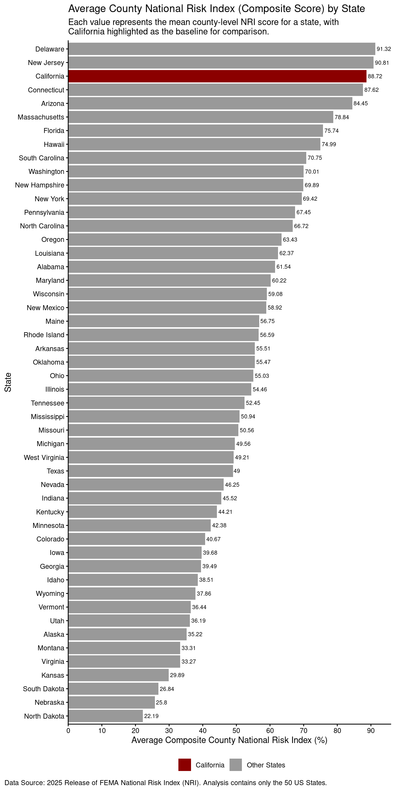

This homework assignment involves cleaning, wrangling, and visualizing FEMA National Risk Index data for all 50 U.S. states using R and ggplot2. The final plot compares California to other states, highlights key trends, and includes key graphic components (ie. a title, subtitle, caption, alt text, and a polished, and accessible theme).
Load in Data
# Read in data library(tidyverse)library(here)fema <-read_csv(here("data", "National_Risk_Index_Counties_807384124455672111.csv"))# Select for the relevant variables and exclude non-US state designations fema_clean <- fema %>%filter(!`State Name`%in%c("District of Columbia","American Samoa", "Guam", "Northern Mariana Islands", "Puerto Rico", "Virgin Islands" )) %>%select(state_name ="State Name", nri ="National Risk Index - Score - Composite")# Observe the structure of the cleaned dataglimpse(fema_clean)
# Create a ranked bar plot with the averaged composite NRI score per statefema_clean %>%group_by(state_name) %>%# Calculate the average county NRI score by statesummarize(mean_nri =mean(nri, na.rm = T)) %>%# Create a new variable to group states mutate(# Reorder states by mean NRI state =fct_reorder(state_name, mean_nri),# Label California as its own category, then group all remaining states together state_group =if_else(state_name =="California", "California", "Other States") ) %>%# Set the aesthetics for the ranked bar plotggplot(aes(x = mean_nri, y = state, fill = state_group)) +# Set aestheticsgeom_col() +# Label each bar with its corresponding average NRI scoregeom_text( aes( label =round(mean_nri, 2)), # Round each score to the nearest hundrethhjust =-0.1, # Adjust the placement to scalesize =2.5# Set a size for each labels ) +# Rescale and adjust the positioning of labels on the x-axisscale_x_continuous(expand =expansion(mult =c(0, 0.05)), # Remove gap at 0 breaks =seq(0, 100, by =10)) +# Break every 10% # Assign colors to each state group (California vs Other States)scale_fill_manual(name ="", # Leave the legend title as an empty stringvalues =c("California"="darkred", # Assign "California" a dark red color"Other States"="grey60"# Assign the grouped states besides California a grey color for contrast )) +# Update the labels of the plot labs(title ="Average County National Risk Index (Composite Score) by State", # Add a titlesubtitle ="Each value represents the mean county-level NRI score for a state, with \nCalifornia highlighted as the baseline for comparison.", # Add a subtitle with a line breakx ="Average Composite County National Risk Index (%)", # Add an x-labely ="State", # Add a y-labelcaption ="Data Source: 2025 Release of FEMA National Risk Index (NRI). Analysis contains only the 50 US States.", # Add a captionalt ="Horizontal bar chart showing average county National Risk Index (NRI) by state, with California highlighted in dark red and other states in grey, bars ordered from highest to lowest mean NRI, each bar labeled with its numeric mean NRI Score, x-axis showing NRI (%) with breaks every 10%,and y-axis listing the states.") +# Select a theme with no background grid theme_classic() +# Adjust the legend and caption placement theme(legend.position ="bottom", # Move the legend position to bottom of plotplot.caption.position ="plot", # Align the caption with plotplot.caption =element_text(hjust =0)) # Adjust the position horizontal to the plot

Analysis Questions
1. What are your variables of interest and what kinds of data (e.g. numeric, categorical, ordered, etc.) are they (a bullet point list is fine)?
State Name: A categorical variable containing the full name of each US state and territory as a string.
National Risk Index - Score - Composite: A numeric variable containing the composite (single overall score) National Risk Index for each US county.
2. How did you decide which type of graphic form was best suited for answering the question? What alternative graphic forms could you have used instead? Why did you settle on this particular graphic form?
Because the National Risk Index (NRI) is a standardized composite index representing the relative county-level risk, averaging county scores with states provides an approximate summary of risk levels for state to state comparison. A horizontal ranked bar chart was chosen for visualization because it clearly outlines the relative standing of each state and enables an easier comparison that highlights California’s score among other states. Alternative graphics include a boxplot which would show the distribution of county-level scores within each state. A ridgeline plot would also be suitable to visualize variation across counties, as well a 2D hex plot. However, I chose a ranked bar plot for simplicity and placing a clearer emphasis on state-level averages to prevent overplotting counties within each state on the same graphic panel.
3. Summarize your main finding in no more than two sentences.
Counties in California rank third highest in average FEMA NRI, with a composite score of 88.72%. Delaware and New Jersey rank slightly higher, but California’s score is still very high likely due to its susceptibility to natural hazards such as earthquakes and wildfires.
4. What modifications did you make to this visualization to make it more easily readable?
Several modifications were made to improve readability. The average county level NRI score was calculated for each state, and bars were colored to highlight California in dark red while all other states are gray, making it easier to distinguish the state of interest. States were ordered from highest to lowest average NRI to emphasize ranking, and numeric values were added to each bar for identifying the specific NRI score in each state for precise comparison.
5. Is there anything you wanted to implement, but didn’t know how? If so, please describe.
An aspect of the visualization analysis I wanted to explore but wasn’t sure how to implement was a visualization showing the percentage makeup of how susceptible each county is to natural disasters relative to other counties within the same state, as well as comparing that distribution across different states. For example, it would have been interesting to see how counties in Texas and California differ in their risk composition, highlighting which counties contribute most to the state’s overall vulnerability.